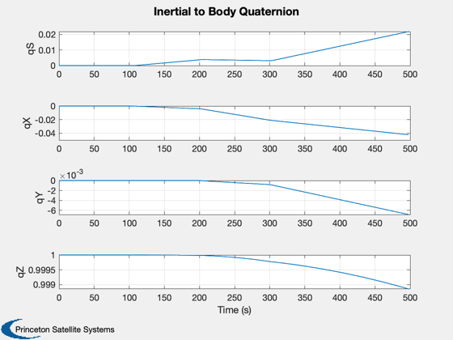
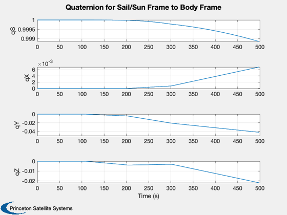
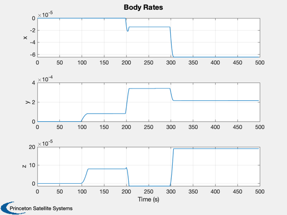
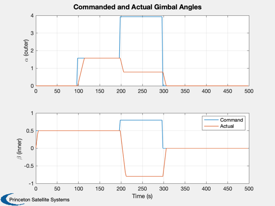
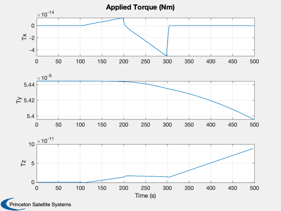
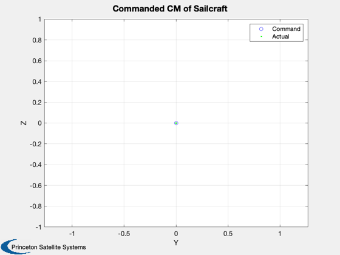
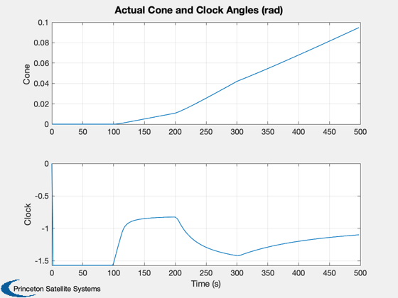
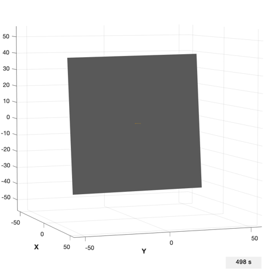

Demonstrate gimballed boom actuation with set gimbal commands.
This demo uses the PlateWithBoom CAD model. The gimbals have a
1-2 sequence, first around the X axis and then around the Y axis.
The boom is nominally aligned with the body X axis. Note that the
inner gimbal zeros itself before the outer gimbal is rotated to
avoid intermediate torques. There are two sets of gimbal angles
describing every boom position, and GimbalRates will choose the
closest path, which may differ from the commanded angles.
The command sequence is:
[alpha] = [0 0.0 pi/2 5pi/4 0], outer gimbal (1)
[beta ] [0 0.5 0.5 h 0.8 0], inner gimbal (2)
The commands change at 100 second intervals.
When interpreting the torques recall that
T = (Cp - Cm) x F
where in this case F is nominally along the -X axis, Cp is the center of
pressure which is the origin, and Cm is the center of mass.
This means that we would expect the following Cm displacement:
[0, -Z, +Y, -Y and +Z, 0]
with the following torques:
[0, -Y, -Z, +Y and +Z, 0]
The attitude dynamics assume fixed gimbal rates.
The CAD model is a perfectly specular plate with a control boom.
Functions demonstrated:
PlateWithBoom
HGimballedBoom
TwoBodyRateModel
SailDisturbance
GimbalRates
Since version 7.
------------------------------------------------------------------------
See also ACPlot, CrossSection, DrawSCPlanPlugIn, Eul2Mat, QMult, QPose,
Constant, WaitBarManager, Plot2D, TimeLabl, Cross, Mag, RK4, Unit, JD2000,
El2RV, GimbalRates, HGimballedBoom, ConeClockToQConstrained, QSail,
QToConeClock, HingeRotationMatrix, SailDisturbance, SailEnvironment
------------------------------------------------------------------------
Contents
cone0 = 0.0;
clock0 = 0.0;
aRateNom = 0.1;
tDuration = 500;
animate = 1;
clear SailDisturbance; clear l;
Load the control boom sail model
g = load('PlateWithBoom.mat');
g.mass.inertia(1,1) = g.mass.inertia(2,2);
Sim timing
dT = 2;
nSim = floor(tDuration/dT);
Gimbal parameters
aNom = aRateNom*ones(2,1);
Sail physical parameters
aSail = CrossSection(g);
fSail = 1367/3e8*2*aSail*[-1;0;0];
aBoom(:,1) = Cross([0;1;0],fSail);
aBoom(:,2) = Cross([0;0;1],fSail);
mC = g.body(1).mass.mass;
mB = g.body(2).mass.mass;
rBoomCM = Mag(g.body(2).mass.cM);
Create the disturbance profile
Initial Julian date
p = [];
p.jD = JD2000;
We are creating a circular heliocentric orbit.
r = Constant('au');
mu = Constant('mu sun');
el = [r 0 0 0 0 0];
Orbit state
[p.r,p.v] = El2RV(el,[],mu);
Initial Quaternion (inertial to body frame)
q0 = ConeClockToQConstrained(cone0,clock0,p.r,p.v,-Unit(p.r));
p.q = q0;
core and the boom. The core is defined as body 1 in the CAD file.
p.angle = [0;0];
p.axis = [1 0;0 1;0 0];
p.body = [2 2];
Create the data structure
d = [];
d.aeroOn = 0;
d.albedoOn = 0;
d.solarOn = 1.0;
d.magOn = 0;
d.radOn = 0;
d.ggOn = 1.0;
field models or atmospheric density models.
d.planet = 'sun';
Initial state
t = 0;
w = [0;0;0];
angle = [0;0];
aDot = [0;0];
x = [p.q;w;angle;aDot];
hW = [0;0;0];
alpha = 0;
beta = 0;
cM = [0;0];
tPlot = zeros(1,nSim);
xPlot = zeros(length(x),nSim);
hPlot = zeros(3,nSim);
tqPlot = zeros(3,nSim);
aCPlot = zeros(2,nSim);
qSPlot = zeros(4,nSim);
cMPlot = zeros(2,nSim);
cM2Plot = zeros(2,nSim);
Located at the center of the body frame.
qIToSail = QSail( -Unit(p.r), p.r, p.v );
Simulation loop
WaitBarManager( 'initialize', struct('nSamp',nSim,'name','Boom Actuation Demo') );
for k = 1:nSim
tPlot(k) = t;
xPlot(:,k) = x;
qSPlot(:,k) = QMult(QPose(qIToSail),x(1:4));
if( qSPlot(1,k) < 0 )
qSPlot(:,k) = -qSPlot(:,k);
end
e = SailEnvironment( 'sun', p, d );
[f,tq] = SailDisturbance( g, p, e, d );
tqPlot(1:3,k) = tq.total;
if k == 1
beta = 0.5;
elseif k == 50
alpha = pi/2;
elseif k == 100
alpha = 5*pi/4;
beta = 0.8;
elseif k == 150
alpha = 0;
beta = 0;
end
uB = Eul2Mat([alpha;0;0])'*Eul2Mat([0;beta;0])'*[1;0;0];
cM = uB*rBoomCM;
uB = Eul2Mat([x(8);0;0])'*Eul2Mat([0;x(9);0])'*[1;0;0];
cM2 = uB*rBoomCM;
[aDot,angleCommand] = GimbalRates( x(8:9), [alpha;beta], aNom, dT );
aCPlot(:,k) = [alpha;beta];
cMPlot(:,k) = cM(2:3);
cM2Plot(:,k) = cM2(2:3);
[hPlot(:,k), hW] = HGimballedBoom( [zeros(6,1);x], g, p.axis, aDot, hW );
x(10:11) = aDot;
x = RK4( 'TwoBodyRateModel', x, dT, t, f, tq, g, p, hW );
t = t + dT;
p.jD = p.jD + dT/86400;
p.q = x(1:4,:);
p.angle = x(8:9);
WaitBarManager( 'update', k ); drawnow;
end
WaitBarManager( 'close' );
Prepare data for plotting
[coneP,clockP] = QToConeClock(xPlot(1:4,:),repmat(p.r,1,nSim),repmat(p.v,1,nSim),...
-repmat(Unit(p.r),1,nSim));
[tPlot2, tLabl] = TimeLabl( tPlot );
h = [];
h(1) = Plot2D(tPlot,[xPlot(1:4,:)],'Time (s)',{'qS','qX','qY','qZ'},'Inertial to Body Quaternion');
Plot2D(tPlot,[qSPlot],'Time (s)',{'qS','qX','qY','qZ'},'Quaternion for Sail/Sun Frame to Body Frame');
h(2) = Plot2D(tPlot,xPlot(5:7,:),'Time (s)',{'x','y','z'},'Body Rates');
h(3) = Plot2D(tPlot,[aCPlot;xPlot(8:9,:)],'Time (s)',{'\alpha (outer)','\beta (inner)'},'Commanded and Actual Gimbal Angles',[],{[1 3],[2 4]});
legend('Command','Actual')
h(4) = Plot2D(tPlot,tqPlot,'Time (s)',{'Tx','Ty','Tz'},'Applied Torque (Nm)');
    
Commanded boom CM control
Plot2D(cMPlot(1,:),cMPlot(2,:),'Y','Z','Commanded CM of Sailcraft');
hold on
l(1) = plot(cMPlot(1,:),cMPlot(2,:),'bo');
l(2) = plot(cM2Plot(1,:),cM2Plot(2,:),'g.');legend(l,'Command','Actual')
axis equal

Try plotting cone/clock angles
Plot2D(tPlot,[coneP;clockP], 'Time (s)', {'Cone','Clock'}, 'Actual Cone and Clock Angles (rad)')
if (0)
c = cd;
dBC = fileparts(which('BoomActuation'));
cd(dBC)
print(h(1),'-depsc2','BCQuaternion')
print(h(2),'-depsc2','BCRates')
print(h(3),'-depsc2','BCAngles')
print(h(4),'-depsc2','BCTorque')
end

Animate resulting sail and boom motion
if ~animate
return;
end
tag = DrawSCPlanPlugIn( 'initialize', g );
view(70,5)
u = uicontrol('style','text','string','0 s','position',[380 10 60 20]);
kAnim = 1:4:nSim;
yA = g.radius*[-1 1 -1 1 -1 1];
for k = kAnim
g.body(1).bHinge.q = qSPlot(1:4,k);
bBoomToCore = HingeRotationMatrix( xPlot(8:9,k), [1 0;0 1;0 0] )';
g.body(2).bHinge.b = bBoomToCore;
DrawSCPlanPlugIn( 'update', tag, g );
set(u,'string',[num2str(k*dT) ' s'])
axis(yA);
drawnow;
pause(0.05);
end
